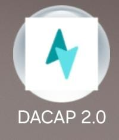
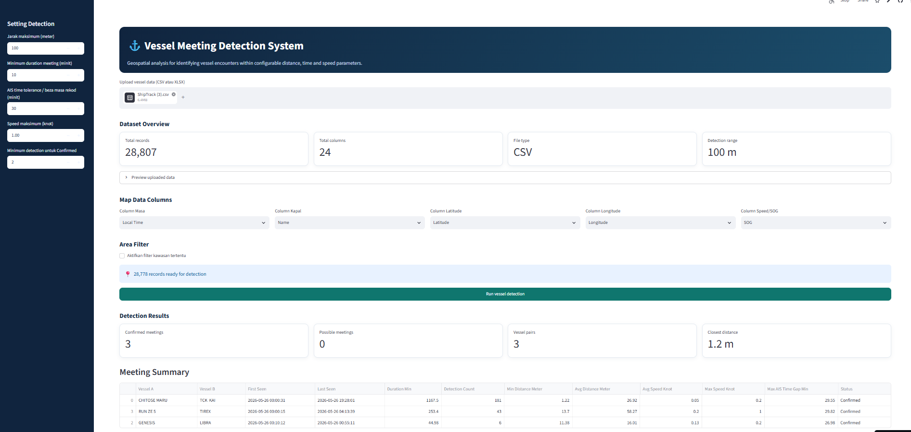
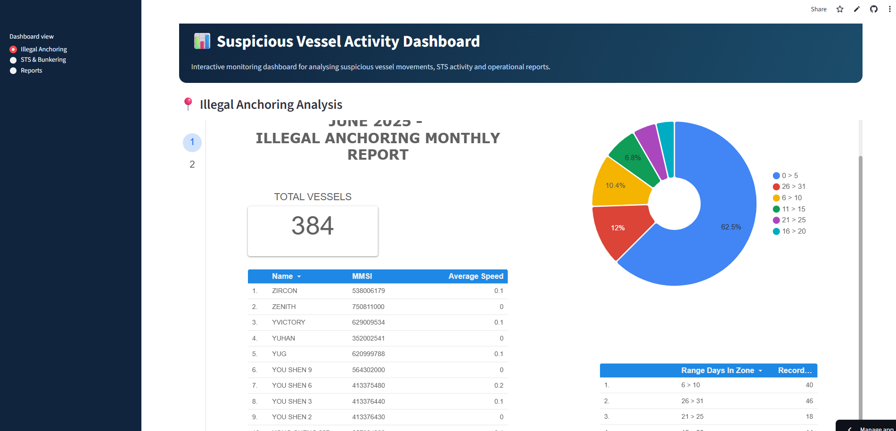
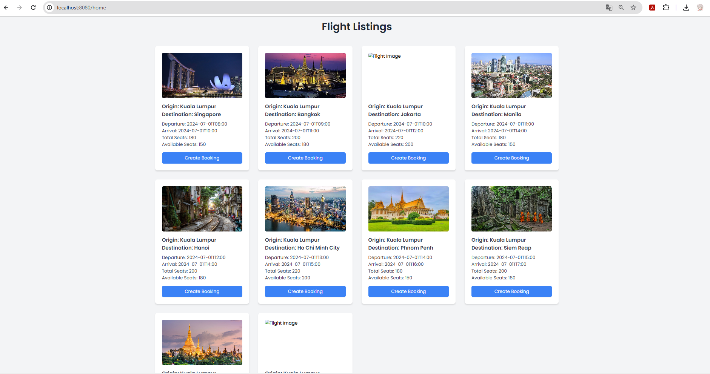

01DACAP 2.0 Android Application ↗
Flutter · JSONMaintained and enhanced an Android application, improving reliability through practical fixes and iterative upgrades.
JUNIOR SOFTWARE · WEB · FLUTTER
Hi, I’m Nurul Awanis — an IT Support Engineer transitioning into software and web development, with hands-on experience in Flutter, Python automation, Java Spring Boot and REST APIs.
Explore my work ↓ Download resume ↗01 / ABOUT ME
I combine 2+ years of production IT support with practical software development experience.
I hold a Bachelor of Computer Science (Hons.) in Data Communication & Networking from UiTM. I have maintained a Flutter Android application, automated operational reporting with Python and Pandas, and built backend modules with Java EE, Spring Boot and REST APIs. I am currently expanding my web development toolkit with HTML, CSS, JavaScript, WordPress, WooCommerce and PHP.
02 / SELECTED WORK

01Maintained and enhanced an Android application, improving reliability through practical fixes and iterative upgrades.

02Built a tool that uploads CSV/XLSX vessel data and detects vessels meeting within a configurable distance, time window and speed limit.

03Created an interactive dashboard to filter, search and visualise suspicious vessel activity from daily Excel reports.

04Developed a web application for flight listings, user login, booking creation, booking updates and admin booking management.
03 / EXPERIENCE
Greenfinder Sdn. Bhd. · Shah Alam
Majlis Bandaraya Alor Setar